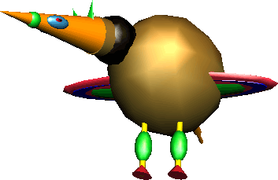

Welcome to my homepage!™ I am
On December 29th 2010 my music project Education Of The Noobz is invited to Uwe Schenk Trifft at Stuttgart's State Theatre. Uwe's highly talented show band is going to play some of my compositions -- together with my Atari. And in between I am going to explain how i make soundchip music. FOR THE TRUE HEADZ!!
Also check the promo video.
I will be moderating an episode of Trailblazers, the mindblowing web surfing contest, at the Ars Electronica in Linz, Austria, on 2010-09-03. But don't look at the official site, better check the Digital Communities event site, there will be lots of interesting things happening in the TELEINTERNET space.
For example, Olia Lialina and me will be talking about our book Digital Folklore!
Be there or be square!
Tomorrow, Friday 2010-05-21, I will give a talk at the design conference Typo Berlin about Digital Folklore. Looking fwd!
Please consider visiting my new music site Education of the Noobz!
It contains contemporary home computer compositions, sometimes also called "8 Bit" or "Chiptune".
My olde matey Tracky Birthday already "busted" some so called "rhymz" to a Atari composition of mine. Now a group of professional instrumentalists thought it is their turn and Tracky "drops" his "science" as well. I am delighted.

Technical innovations shape only a small part of computer and network culture. It doesn't matter much who invented the microprocessor, the mouse, TCP/IP or the World Wide Web; nor does it matter what ideas were behind these inventions. What matters is who uses them. Only when users start to express themselves with these technical innovations do they truly become relevant to culture at large.
Users' endeavors, like glittering star backgrounds, photos of cute kittens and rainbow gradients, are mostly derided as kitsch or in the most extreme cases, postulated as the end of culture itself. In fact this evolving vernacular, created by users for users, is the most important, beautiful and misunderstood language of new media.
As the first book of its kind, this reader contains essays and projects investigating many different facets of Digital Folklore: online amateur culture, DIY electronics, dirtstyle, typo-nihilism, memes, teapots, penis enlargement …
I am going to give a talk about Digital Folklore on November 24th 2009, 19:00 at the Berlin Technical Art School. It's about Users, Glitzers, 3D Primitives and many more things that brought soul to computers as we know them today. The series is called Drop Shadow Talks! This name alone should make you drop by.
Ye good olde Assoziations-Blaster will celebrate one last time on Wednesday, 2009-11-04, 19:30 for its tenth birthday. This project has seen a lot of German Internet Culture. Come to Stuttgart's City Library, entry fee for the presentation is 4 Euros, 3 Euros if you look like a student.
After this event, a new version of the Blaster will replace the rusty original bit by bit.
Have you heard? The artist duo UBERMORGEN published a book about all of their works!
Olia and me are fans of UBERMORGEN, so we decided to do something appropriate for internet folks and create fan art for their publication. It is a bitmap comic drawn pixel by pixel. The "dithering" was also done by hand, so you will see some special gray scales not available in any software!! One Logitech mouse ruined in the making. Typesetting done with "Small Fonts".
---> CLICK HERE!!!1
Other comics:
Tobi-X and me created the beautiful Ursula von der Leyen-Fanclub, including an amazing web avatar. The not-german-speaking members of the audience who haven't heard of this lady might find Tobi's announcement helpful. In the 90's this would have been called hacktivism!!